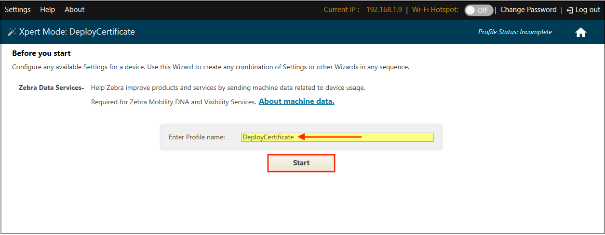
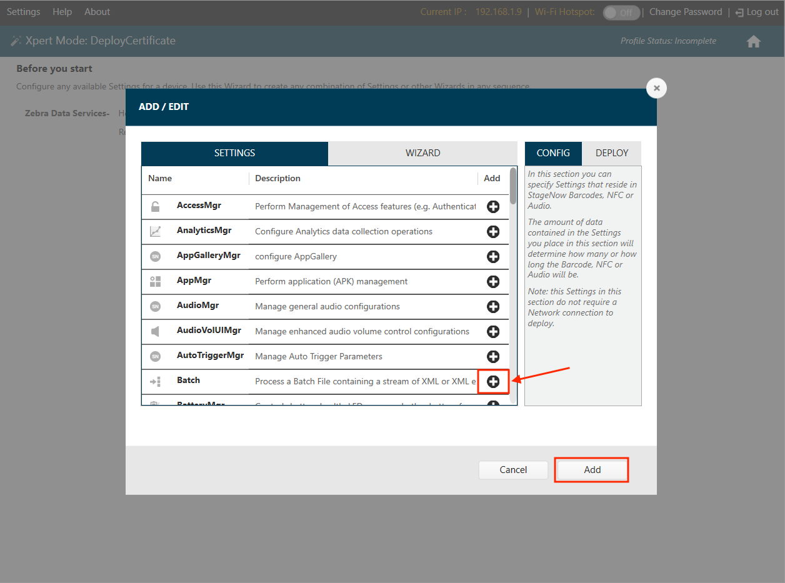
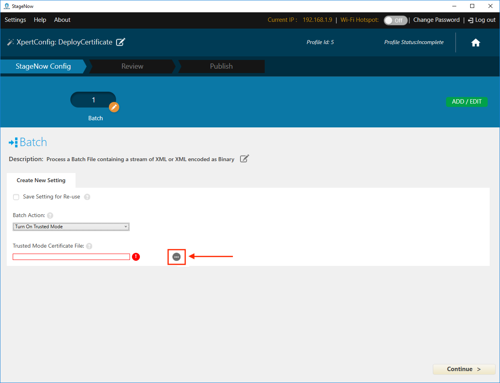
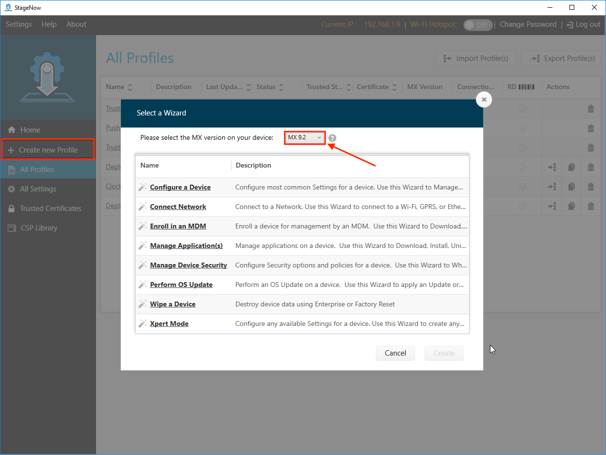

概要
StageNow 4.0 以降では信頼ありステージングがサポートされています。これによって、MX 9.2 以降のデバイスを不正なステージングから保護できます。信頼されたデバイスは、セキュリティ証明書から作成されます。証明書を使用して信頼されたデバイスを作成すると、同じセキュリティ証明書を使用して作成されたバーコードからのみデバイスをステージングできます。
このガイドでは、信頼ありステージングで使用するために既存の証明書を StageNow にインポートするプロセスと、必要に応じて証明書を作成する方法について説明します。
IMPORTANT:信頼ありステージングと信頼されたデバイスへのアクセスは、管理者権限を持つ Windows ユーザーのみが行うことができます。
要件:
- Windows が動作するコンピュータ
- StageNow 4.0 以降がインストールされている
- MX 9.2 以降を搭載した Zebra デバイス
- 自己署名型セキュリティの「信頼された証明書」 (1024 バイトちょうどの
.pfxファイル) - OpenSSL がインストールされている (信頼された証明書を作成する場合 *)
スナップショットが次の手順で処理します。
- 信頼された証明書* (
.pfxファイル)を StageNow にインポートする - 信頼された証明書をデバイスに展開して、信頼されたデバイスを作成する
NOTE:このようなデバイスは、標準の (「信頼なし」) プロファイルを受け入れなくなります - 信頼されたデバイスで使用するための信頼ありプロファイルを作成する
* 信頼された証明書が存在しない場合は、このガイドの最後の「信頼された証明書を作成する」手順から始めます。
信頼されたデバイスの作成
I. 証明書をインポートする
このプロセスでは、StageNow を管理モードで実行する必要があります。
- StageNow のホーム画面で、[信頼された証明書] ボタンをクリックします。
 画像をクリックすると拡大表示され、Esc キーを押すと終了します。
画像をクリックすると拡大表示され、Esc キーを押すと終了します。
- [信頼された証明書] ページで、以前にインポートした証明書をリストから選択し、手順 5 に進みます。
新しい証明書をインポートするには、[証明書のインポート] ボタンをクリックします。 画像をクリックすると拡大表示され、Esc キーを押すと終了します。
CAUTION:証明書ファイルのサイズは 1024 バイトちょうどにする必要があります。 - インポートする
.pfxファイルに移動します。 画像をクリックすると拡大表示され、Esc キーを押すと終了します。
画像をクリックすると拡大表示され、Esc キーを押すと終了します。
- インポートされたファイルが、下図のように信頼された証明書のリストに表示されていることを確認します。
注: インポートすると、.pfxファイルは暗号化されて.cerのファイル拡張子が付きます。 画像をクリックすると拡大表示され、Esc キーを押すと終了します。
画像をクリックすると拡大表示され、Esc キーを押すと終了します。
- 証明書をデバイスにプッシュして [信頼あり] にするステージング プロファイルを作成します (次のセクションで説明)。
関連項目: 自己署名証明書を作成する方法
II.証明書をデバイスに導入する
- ホーム画面で、[新しいプロファイルの作成] ボタンをクリックします。
 画像をクリックすると拡大表示され、Esc キーを押すと終了します。
画像をクリックすると拡大表示され、Esc キーを押すと終了します。
- [Xpert モード] を選択し、[作成] ボタンをクリックします。
 画像をクリックすると拡大表示され、Esc キーを押すと終了します。
画像をクリックすると拡大表示され、Esc キーを押すと終了します。
- 導入プロファイルの名前を入力し、[開始] ボタンをクリックします。
 画像をクリックすると拡大表示され、Esc キーを押すと終了します。
- [バッチ] の CSP 行のプラス記号 (+) をクリックし、[追加] ボタンをクリックします。 画像をクリックすると拡大表示され、Esc キーを押すと終了します。
- ドロップダウン メニューから [信頼モード オン] を選択します。
 画像をクリックすると拡大表示され、Esc キーを押すと終了します。
画像をクリックすると拡大表示され、Esc キーを押すと終了します。
- [ナビゲーション] ボタンをクリックして、[開く] ダイアログを表示します (手順 7 を参照)。画像をクリックすると拡大表示され、Esc キーを押すと終了します。
- 証明書ファイル (セクション I の手順 4 でインポートしたもの) に移動して選択し、[開く] ボタンをクリックします。
注: インポートすると、.pfxファイルは暗号化されて.cerのファイル拡張子が付きます。 画像をクリックすると拡大表示され、Esc キーを押すと終了します。
画像をクリックすると拡大表示され、Esc キーを押すと終了します。
.cerファイルが表示されていることを確認し、[続行] ボタンをクリックします。 画像をクリックすると拡大表示され、Esc キーを押すと終了します。
画像をクリックすると拡大表示され、Esc キーを押すと終了します。
- 図のようにドロップダウン メニューから [暗号化済み] を選択し、[プロファイルの完了] ボタンをクリックします。 画像をクリックすると拡大表示され、Esc キーを押すと終了します。
- ステージング クライアントに必要なバーコード タイプを選択し、[テスト] ボタンをクリックしてバーコードを生成します。
 画像をクリックすると拡大表示され、Esc キーを押すと終了します。
画像をクリックすると拡大表示され、Esc キーを押すと終了します。
- 信頼されたデバイスを使用してバーコードをスキャンし、証明書を導入します。
 画像をクリックすると拡大表示され、Esc キーを押すと終了します。
画像をクリックすると拡大表示され、Esc キーを押すと終了します。
IMPORTANT:この方法で生成されたバーコードをスキャンしたすべてのデバイスは、「信頼されたデバイス」になり、標準の「信頼なし」ステージング プロファイルでステージングすることはできません。ステージングできるのは、デバイスに導入されたものと同じ証明書を使用して作成された信頼ありプロファイルのみです。
III.信頼ありステージング プロファイルを作成する
信頼ありプロファイルは、1 つの重要な例外を除き、標準 (「信頼なし」) のプロファイルと同じです。最後の手順では、「信頼あり」の指定が追加されるため、セキュリティ証明書を選択する必要があります。
信頼ありプロファイルを作成するには、次の手順を実行します。
- ホーム画面で、[新しいプロファイルの作成] ボタンをクリックします。ウィザードを選択する前に、ドロップダウン メニューから MX 9.2 以降が選択されていることを確認してください。 画像をクリックすると拡大表示され、Esc キーを押すと終了します。
- 名前を付けるときは、後でプロファイルを簡単に識別できるような名前を選ぶことをお勧めします。
 画像をクリックすると拡大表示され、Esc キーを押すと終了します。
画像をクリックすると拡大表示され、Esc キーを押すと終了します。
- プロファイル作成の最後の手順で、ドロップダウン メニューから [信頼あり] を選択します。
 画像をクリックすると拡大表示され、Esc キーを押すと終了します。
画像をクリックすると拡大表示され、Esc キーを押すと終了します。
- 以前にインポートされた証明書のドロップダウン メニューから、対象デバイスに導入された証明書と一致する証明書を選択します。
 画像をクリックすると拡大表示され、Esc キーを押すと終了します。
画像をクリックすると拡大表示され、Esc キーを押すと終了します。
信頼ありプロファイルは、下のサンプル イメージのように、緑色のロックのアイコンでプロファイル リストに示されます。 画像をクリックすると拡大表示され、Esc キーを押すと終了します。
画像をクリックすると拡大表示され、Esc キーを押すと終了します。
IMPORTANT: 信頼されたデバイスは、当該のデバイスに導入されたものと同じ証明書を含む信頼ありプロファイルでのみステージングできます。
詳細については、「ステージング プロファイル ガイド」を参照してください。
信頼モード オフ
信頼モードからデバイスを削除する必要がある場合は、単純に信頼ありプロファイルを作成し、バッチ CSP を使用して[信頼モード オフ] を選択します。以下で詳しく説明します。
信頼モードをオフにして信頼ありプロファイルを作成するには、次の手順を実行します。
- ホーム画面で、[新しいプロファイルの作成] ボタンをクリックします。 画像をクリックすると拡大表示され、Esc キーを押すと終了します。
- [Xpert モード] を選択し、[作成] ボタンをクリックします。 画像をクリックすると拡大表示され、Esc キーを押すと終了します。
- 導入プロファイルの名前を入力し、[開始] ボタンをクリックします。
 画像をクリックすると拡大表示され、Esc キーを押すと終了します。
画像をクリックすると拡大表示され、Esc キーを押すと終了します。
- [バッチ] の CSP 行のプラス記号 (+) をクリックし、[追加] ボタンをクリックします。 画像をクリックすると拡大表示され、Esc キーを押すと終了します。
- ドロップダウン メニューから [信頼モード オフ] を選択し、[続行] ボタンをクリックします。
 画像をクリックすると拡大表示され、Esc キーを押すと終了します。
画像をクリックすると拡大表示され、Esc キーを押すと終了します。
- ドロップダウン メニューから [信頼あり] を選択し、
デバイスを信頼モードにする際に使用したものと同じ証明書ファイルをドロップダウン メニューから選択し て、
[プロファイルの完了] ボタンをクリックします。 画像をクリックすると拡大表示され、Esc キーを押すと終了します。
画像をクリックすると拡大表示され、Esc キーを押すと終了します。
- ステージング クライアントに必要なバーコード タイプを選択し、[テスト] ボタンをクリックしてバーコードを生成します。
 画像をクリックすると拡大表示され、Esc キーを押すと終了します。
画像をクリックすると拡大表示され、Esc キーを押すと終了します。
- 信頼モードから削除するデバイスを使用して、バーコードをスキャンします。 画像をクリックすると拡大表示され、Esc キーを押すと終了します。
これで、デバイスが信頼モードから削除され、通常のステージング プロファイルを使用してステージングできるようになります。
信頼された証明書の作成
このセクションでは、信頼ありステージングを容易にするために StageNow にインポートするための信頼された証明書 (.pfx ファイル) を生成する方法について説明します。このプロセスでは、OpenSSL とそのコマンドライン インタフェース (CLI) を使用して、署名のために認証局 (CA) へ送信する秘密鍵と証明書署名要求 (CSR) を作成します。
要件:
- Windows が動作するコンピュータ
- OpenSSL がインストールされている
このセクションでは、コマンドライン ツールについての知識が役立ちます。詳細については、OpenSSL CLI のコマンドを参照してください。
作業を開始する前に、OpenSSL をダウンロードしてインストールしてください。
I. 秘密鍵と CSR を生成する
注: このセクションでは、秘密鍵を作成し、それを使用して証明書署名要求 (CSR) を生成する方法について説明します。既存の秘密鍵から CSR を準備するには、手順 4 に進みます。
1.コマンドプロンプト ウィンドウ (cmd.exe) を開き、OpenSSL が入ったフォルダに移動します。
2.次のコマンドを使用して、必要なファイル名 (myPrivate.key など) の秘密鍵を生成します。
genrsa -des3 -out myPrivate.key 1024
- この RSA 鍵は、1024 ビット (図を参照) または 2048 ビットのトリプル DES 暗号化で保護できます。
- 手順 2 の後に、パスフレーズを要求するメッセージが表示されます。
3.パス フレーズを作成して入力し、後で参照できるように記録します。
myPrivate.keyというファイルが現在のディレクトリに作成されます。
4.次のコマンドを使用して、前の手順で作成した .key ファイルから CSR ファイルを生成します。
req –new –key myPrivate.key -sha256 –out myPrivate.csr
- 証明書のオプションの X.509 属性の入力を要求するメッセージがいくつか表示されます。
5.環境に基づいてオプション情報を入力するか、各メッセージの後に Enter キーを押して空白のままにします。
myPrivate.csrというファイルが現在のディレクトリに作成されます。
証明書署名要求の myPrivate.csr は、認証局に送信できます。署名されたファイルが CA から返されたら、セクション III に進みます。
II.自己署名証明書を生成する
このセクションの手順は、自己署名証明書が必要な場合のみ実行してください。認証局によってすでに署名された証明書を使用する場合は、セクション III に進みます。
そういった証明書は、テストなどの内部での目的で使用することも、認証局からの署名を待っている間の暫定的な解決策として使用することも可能です。自己署名証明書を使用すると、「署名する認証局が不明か信頼されていません」または類似のメッセージがブラウザに表示されます。OpenSSL を使用して自己署名証明書を作成するには、次の手順を実行します。
6.次のコマンドを使用して、一時的 (1 年) な証明書を生成します。
x509 -req -days 365 -in server.csr -signkey myPrivate.key -sha256 -out mySigned.crt
7.入力を要求するメッセージが表示されたら、前述の手順 3 で作成した myPrivate.key のパス フレーズを入力します。
mySigned.crt ファイルが現在のフォルダに生成されます。セクション III に進んでプロセスを完了してください。
III.CRT を PEM に変換する
最後の手順では、.key ファイルと .crt ファイルを使用して .pfx 証明書を生成し、StageNow にインポートします。
8.コマンド プロンプトで、次のコマンドを実行します。
pkcs12 -export -out trustedCert.pfx -inkey myPrivate.key -in mySigned.crt
証明書 trustedCert.pfx を StageNow にインポートして、信頼ありステージングで使用する準備ができました。